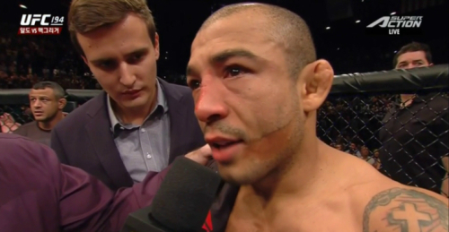

현재 챔피언 - 알렉산더 볼카노프스키 (호주, 24승 1패)

현재 랭킹
- 맥스 할러웨이
- 브라이언 오르테가
- 야이르 로드리게스
- 정찬성
- 칼빈 케이터
- 아놀드 앨런
- 조쉬 에밋
- 기가 치카제
- 브라이스 미셸
- 댄 이게
역대 챔피언
- 조제 알도
- 코너 맥그리거
- 조제 알도
- 맥스 할러웨이
- 알렉산더 볼카노프스키
초대 챔피언 - 조제 알도 (브라질, 31승 7패 현역)
정보
61.2kg ~ 65.8kg체급으로 2010년 10월 WEC가 UFC에 통합되며 생겨난 체급이기에 기존 컨텐더들을 그대로 물려받았다. 초대 챔피언인 폭군 조제 알도가 체급을 평정하며 혼자 부각받는 체급이었으나 코너 맥그리거라는 초신성의 등장, 역사상 손꼽히는 슈퍼스타의 등장으로 엄청난 관심을 받으며 선수층이 대폭 증가하고 상당히 뜨거워진 체급이다. 이후 점차 선수들이 대형화되면서 라이트급에서 내려오거나, 감량고를 겪는 밴텀급 선수들이 올라오는 등 경쟁이 매우 치열해졌다. 국내에서도 정찬성, 최두호의 존재로 인해 관심을 받는 체급이다.